Share of Washington, D.C., residents within 1 or 2 miles of a Wal-Mart
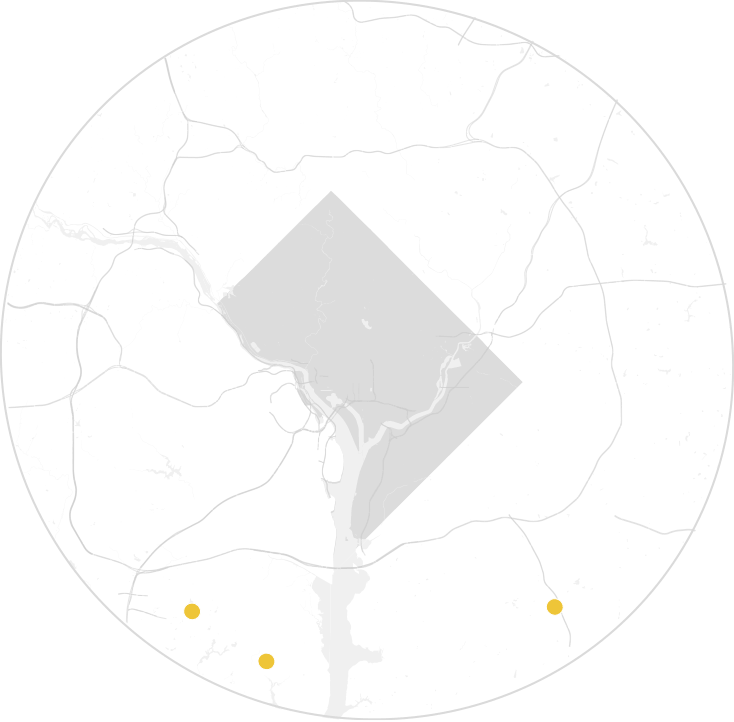
2005
0% within 1 mile
0% within 2 miles
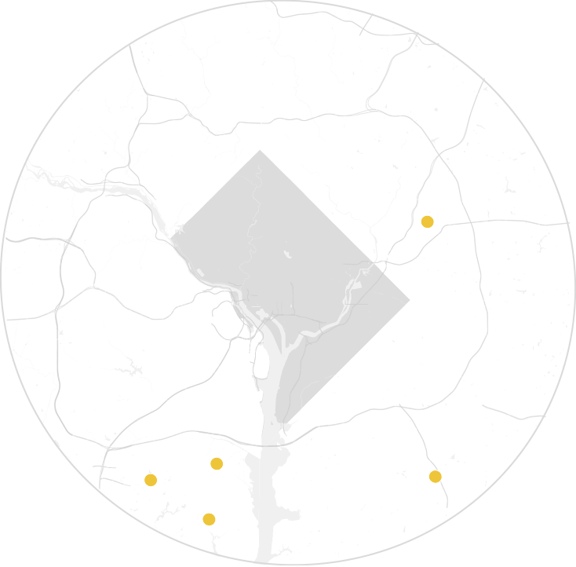
2010
0% within 1 mile
0% within 2 miles
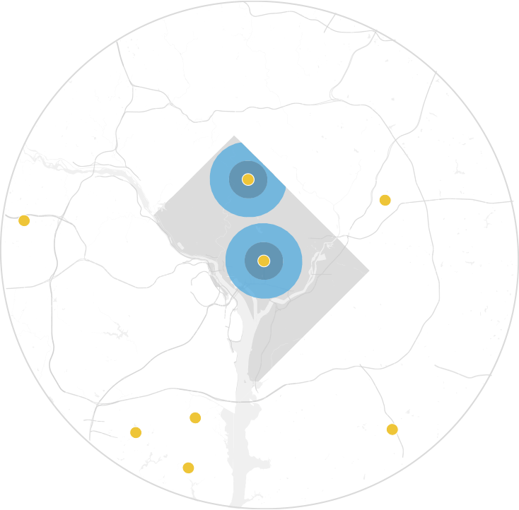
2015
13% within 1 mile
44% within 2 miles
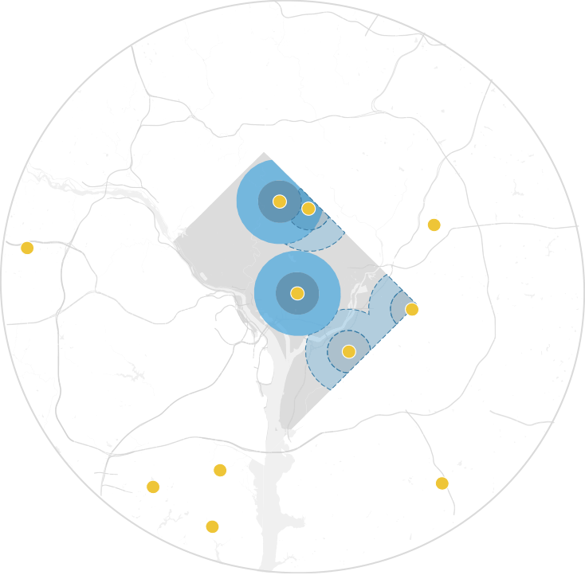
2020 (Projected)
23% within 1 mile
64% within 2 miles
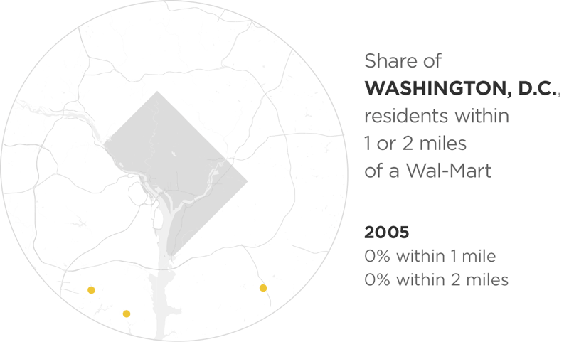
Share of Chicago residents within 1 or 2 miles of a Wal-Mart
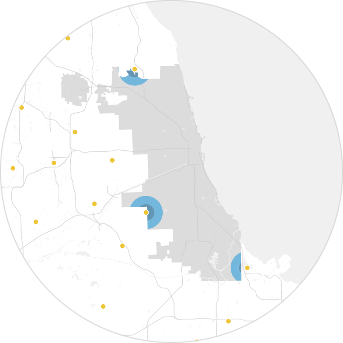
2005
>1% within 1 mile
4% within 2 miles
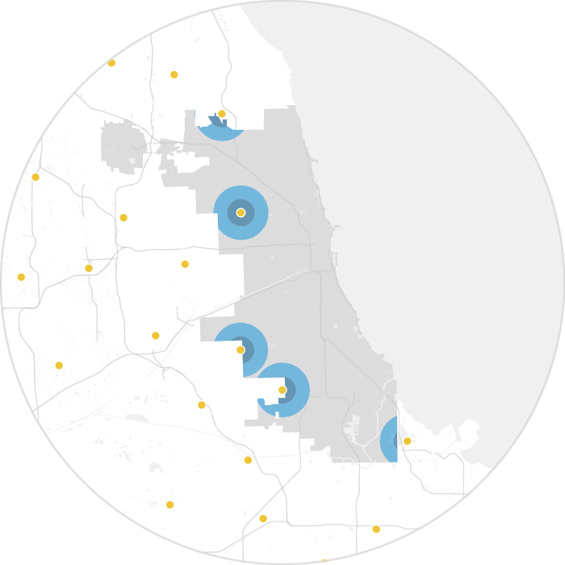
2010
3% within 1 mile
15% within 2 miles

2015
22% within 1 mile
63% within 2 miles
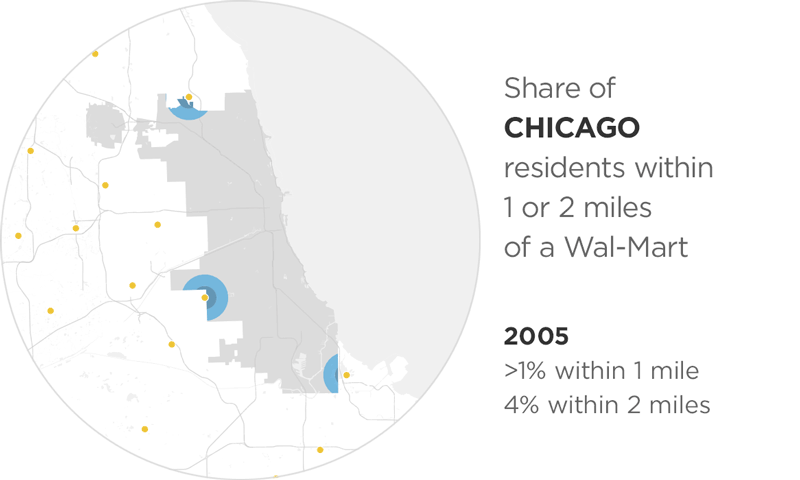
Share of Atlanta residents within 1 or 2 miles of a Wal-Mart
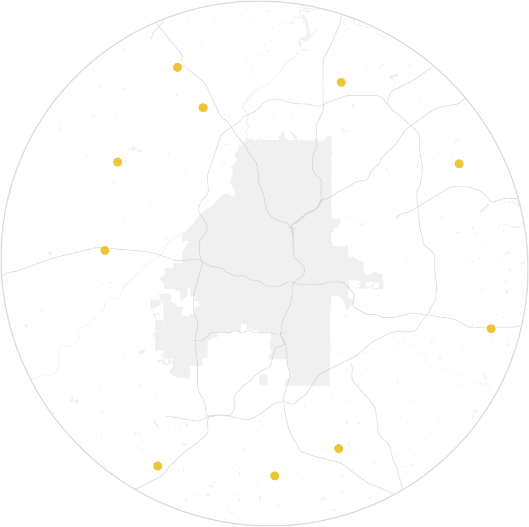
2005
0% within 1 mile
0% within 2 miles
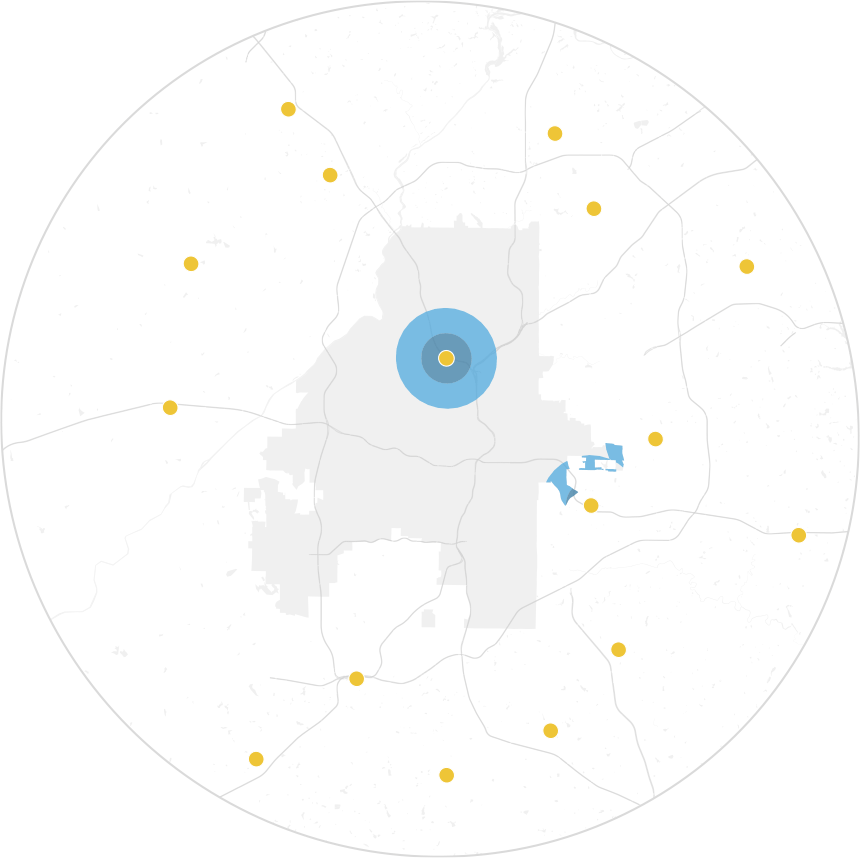
2010
3% within 1 mile
13% within 2 miles
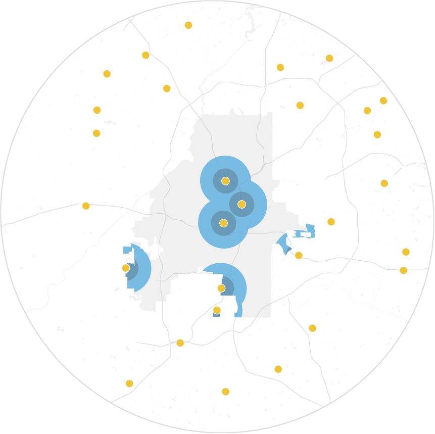
2015
17% within 1 mile
41% within 2 miles
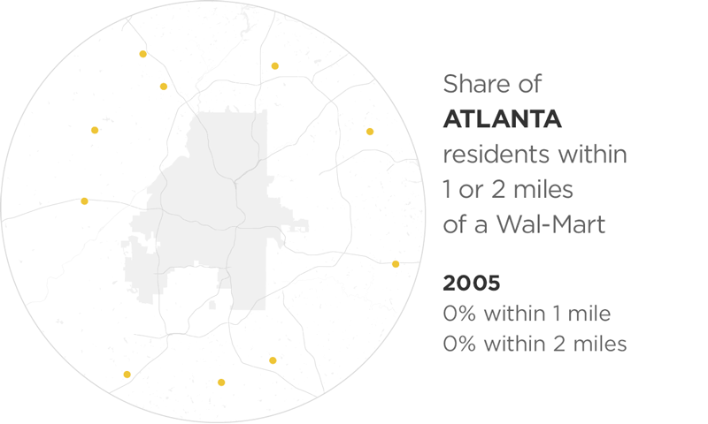